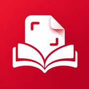

북스캔
책을
PDF
로,
간편하게
책 한 권을 촬영해
깔끔한 PDF로 만들어보세요.
PDF
새 책 스캔
총 0페이지
지금까지 스캔한 페이지 수입니다.
최근 작업
전체 보기
전체 책
책 촬영
0장 촬영
카메라 준비 중
자동 촬영
네모 고정
↻ 0°
양면
취소
페이지 정렬
순서 검수하기
순서 검수
PDF 만들기
설정
번호 수정
회전
이 뒤에 찍기
삭제
보관함
촬영
정렬
설정